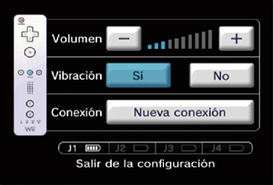

4 |
Preparación del mando |
 |
La manera de sujetar el mando dependerá de si vas a usar solo el mando de Wii o de si lo harás usando también un mando complementario. Nota: Para saber cómo colocar la correa del mando y cómo conectar un mando complementario, consulta el manual de instalación de la consola Wii o el manual de instrucciones respectivo de cada mando. 
Mando de Wii en posición horizontal También se puede utilizar el mando
Este procedimiento te permitirá establecer la comunicación entre el mando y la consola. El mando de Wii incluido con esta consola Wii ya ha sido sincronizado con la misma. Existen dos métodos para sincronizar un mando con la consola: MODO NORMAL - El modo normal de sincronización se utiliza para conectar mandos adicionales a la consola o para volver a sincronizar el mando incluido con la consola Wii. Una vez sincronizado, el mando permanecerá conectado a la consola a menos que sobrescribas dicho ajuste al sincronizar el mando con otra consola diferente. MODO ÚNICO - Este modo te permitirá usar el mando de Wii temporalmente con la consola de un amigo, así como que tus amigos puedan usar sus mandos con tu consola. No sobrescribirá el ajuste del modo normal guardado en el mando de Wii. En este modo, el mando solo se comunicará con la nueva consola mientras esté encendida. Al apagarla, el mando dejará de estar sincronizado con la consola. Nota: Tan solo un mando de Wii sincronizado en el modo normal puede encender o apagar la consola. Sincronización en modo normal
Sincronización en modo único

IMPORTANTE: Si el mando de Wii pierde la sincronización con la consola y no puedes volver a sincronizarlo, revisa el apartado “Solución de problemas” del manual de instalación de la consola.
Si se ha modificado la posición neutra* de alguna palanca o botón del mando de Nintendo GameCube, y se experimentan problemas de control durante el juego, haz lo siguiente:
* La “posición neutra” de una palanca o botón es aquella en la que la palanca no está inclinada y no se ha pulsado ningún botón. Si al encender la consola estás inclinando sin darte cuenta la palanca o estás pulsando algún botón, esa posición pasará a ser la nueva posición neutra, lo que causará problemas de control durante el juego.
|


 |
 |
 |